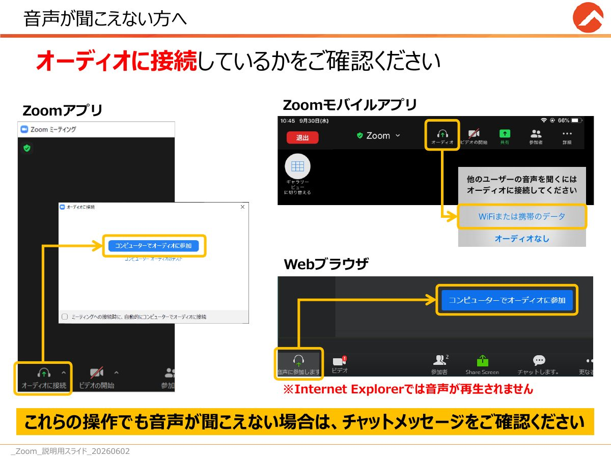
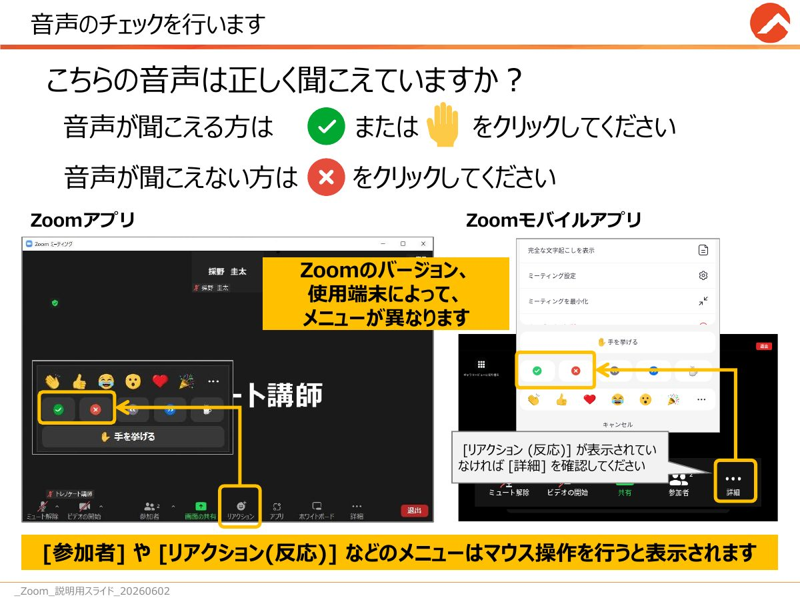
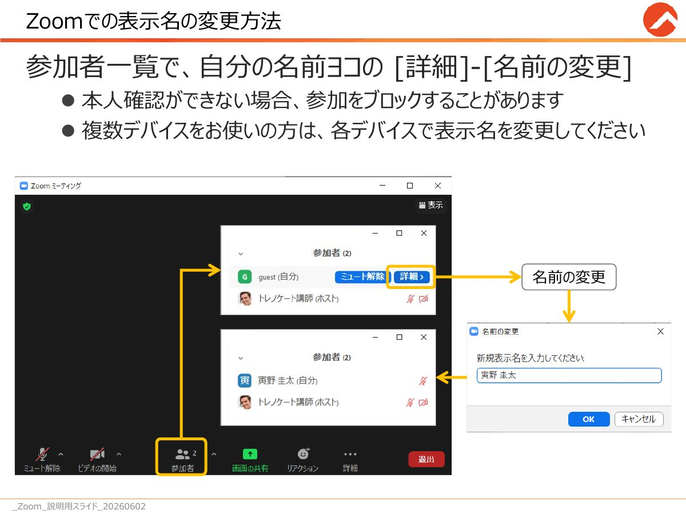
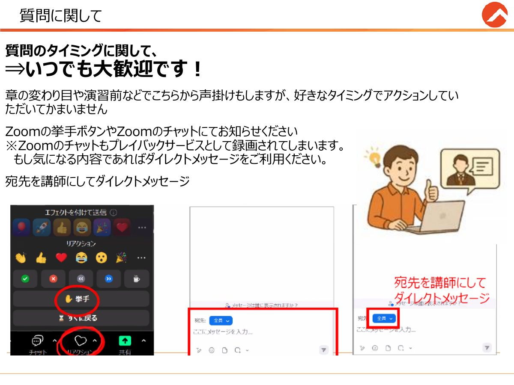
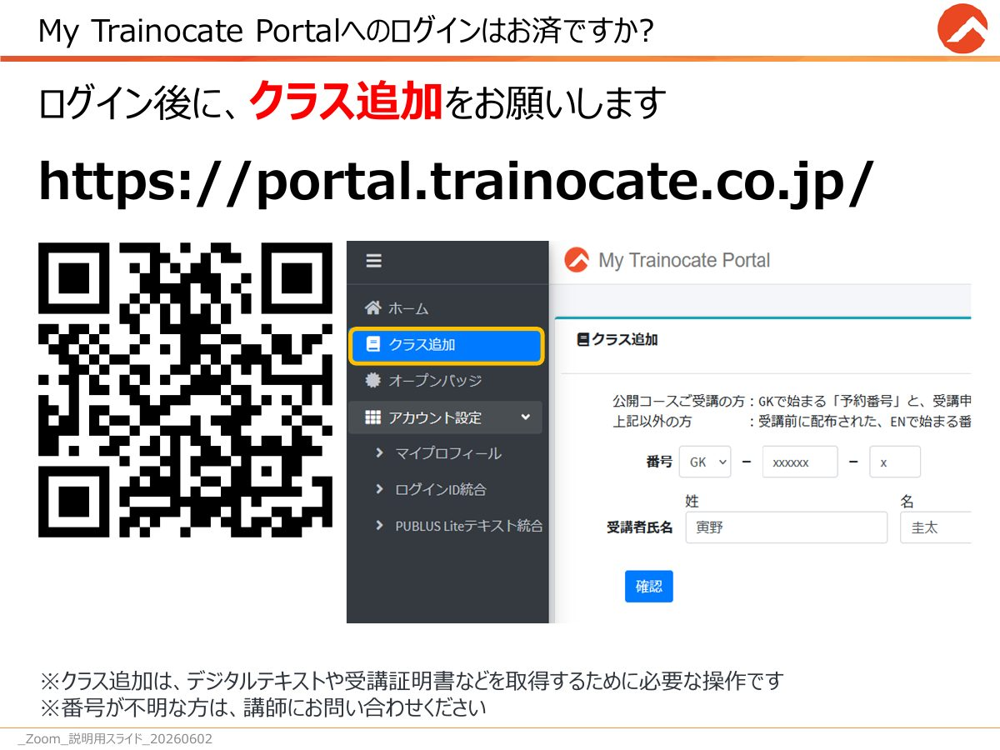
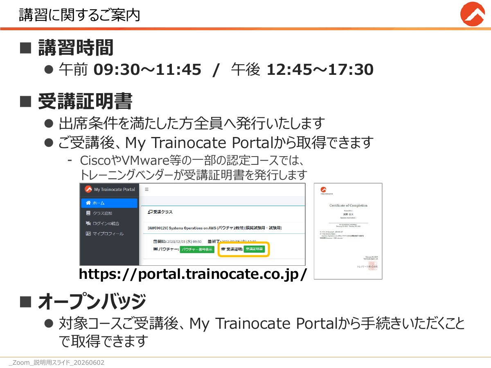
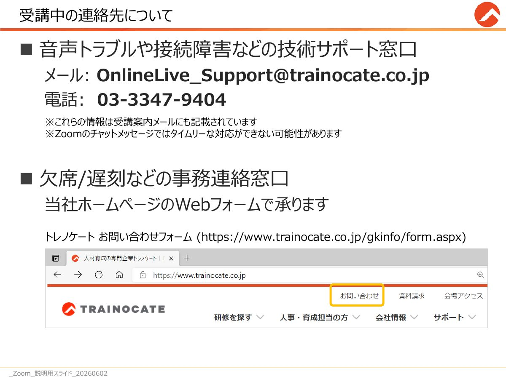
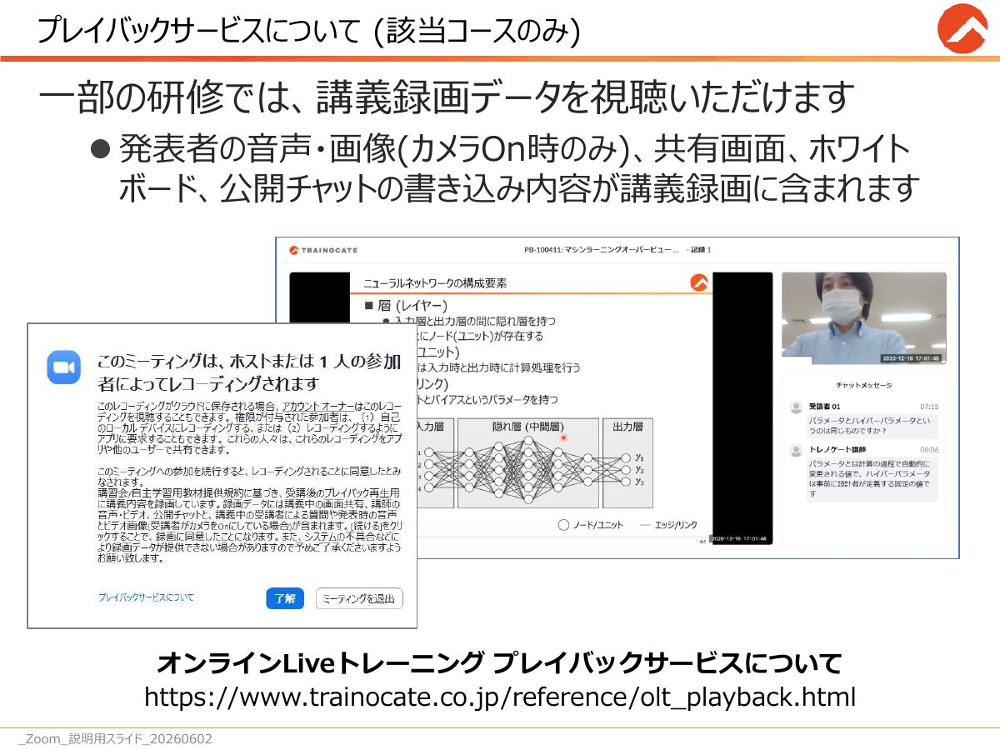

受講案内
オンラインLiveトレーニングのご受講にあたっての案内です。
困ったとき（音声トラブル・接続障害など）
技術サポート窓口 メール：OnlineLive_Support@trainocate.co.jp 電話：03-3347-9404
Zoomのチャットでは、すぐに対応できないことがあります。急ぎのときはメール・電話へ。 連絡先の詳細
講習時間
| 午前 | 09:30〜11:45 |
|---|---|
| 昼休み | 11:45〜12:45 |
| 午後 | 12:45〜17:30 |
休憩の再開時刻は、講師がチャットと画面でお知らせします。
受講にあたってのお願い
- 表示名はフルネーム（姓・名）でご参加ください。出欠確認のため、研修お申し込み時の氏名にしてください
- 講義の録音・録画・画面キャプチャは禁止です。一部の研修ではプレイバックサービスがご利用いただけます
- 周囲の音声が入らないようにしてください。ヘッドセットのご利用をお勧めします
- 助成金を申請する方は、学習に集中できる環境で、規定のコース終了時間までご参加ください（厚生労働省や自治体の助成金申請要件を満たすために必要です）
- 本日は生成AIツールを使います。ChatGPT、Copilot、Gemini、Claude、社内ツールなど、業務で使えるものをご用意ください。使えない環境の方は、講師の画面を見ているだけで大丈夫です
音声が聞こえないとき
まずオーディオに接続しているかをご確認ください。

- Zoomアプリ：画面左下の［オーディオに接続］→［コンピューターでオーディオに参加］
- Zoomモバイルアプリ：画面上部の［オーディオ］→［WiFiまたは携帯のデータ］
- Webブラウザ：画面左下の［音声に参加します］→［コンピューターでオーディオに参加］
これらの操作でも聞こえない場合は、Zoomのチャットを確認するか、技術サポート窓口へご連絡ください。
音声チェックでは、聞こえる方は ✅ または ✋、聞こえない方は ❌ をリアクションで押してください（［参加者］や［リアクション］のメニューは、マウスを動かすと表示されます。Zoomのバージョンや端末によってメニューが異なります）。

Zoomでの表示名の変更
- 画面下の［参加者］を開く
- 自分の名前の横の［詳細］→［名前の変更］
- フルネームを入力して［OK］
本人確認ができない場合、参加をブロックすることがあります。複数のデバイスで参加している方は、それぞれで変更してください。

質問の仕方
質問はいつでも大歓迎です。章の変わり目や演習の前にもこちらから声をかけますが、好きなタイミングでどうぞ。
- 方法：Zoomの挙手ボタン／全体チャット／講師へのダイレクトメッセージ／マイク
- 全体チャットは録画（プレイバック）に残ります。気になる内容は、宛先を講師にしてダイレクトメッセージでどうぞ
- いただいた質問は、講義の区切りで順にお答えします

My Trainocate Portal
- ログイン後に「クラス追加」をお願いします。デジタルテキストや受講証明書を取得するために必要です
公開コースの方：GKで始まる「予約番号」と受講者氏名／それ以外の方：受講前に配布された、ENで始まる番号。番号が分からない方は講師にお問い合わせください - 受講証明書：出席条件を満たした方全員に発行します。受講後、ポータルから取得できます
- オープンバッジ：対象コースの受講後、ポータルから手続きすると取得できます


受講中の連絡先
| 音声トラブル・接続障害など （技術サポート窓口） |
メール：OnlineLive_Support@trainocate.co.jp 電話：03-3347-9404 |
|---|---|
| 欠席・遅刻などの事務連絡 | トレノケートのWebフォームで承ります お問い合わせフォーム |
これらの情報は受講案内メールにも記載されています。Zoomのチャットでは、すぐに対応できないことがあります。

プレイバックサービス（該当コースのみ）
講義の録画を後から視聴できます。録画には、講師の音声・画像（カメラオン時のみ）、共有画面、ホワイトボード、全体チャットの書き込みが含まれます。

研修終了後のご案内
- 受講証明書：My Trainocate Portal から発行・ダウンロードできます。反映にタイムラグがあります（長いと1時間程度）。後日でもダウンロードできます
- プレイバック：案内ページから、本日のZoomミーティングIDとパスコードでログインします。録画は遅くとも翌朝までに準備されます
- 電子テキスト：5年間参照できます
- アンケート：講師がチャットでお送りするリンクからご記入をお願いします